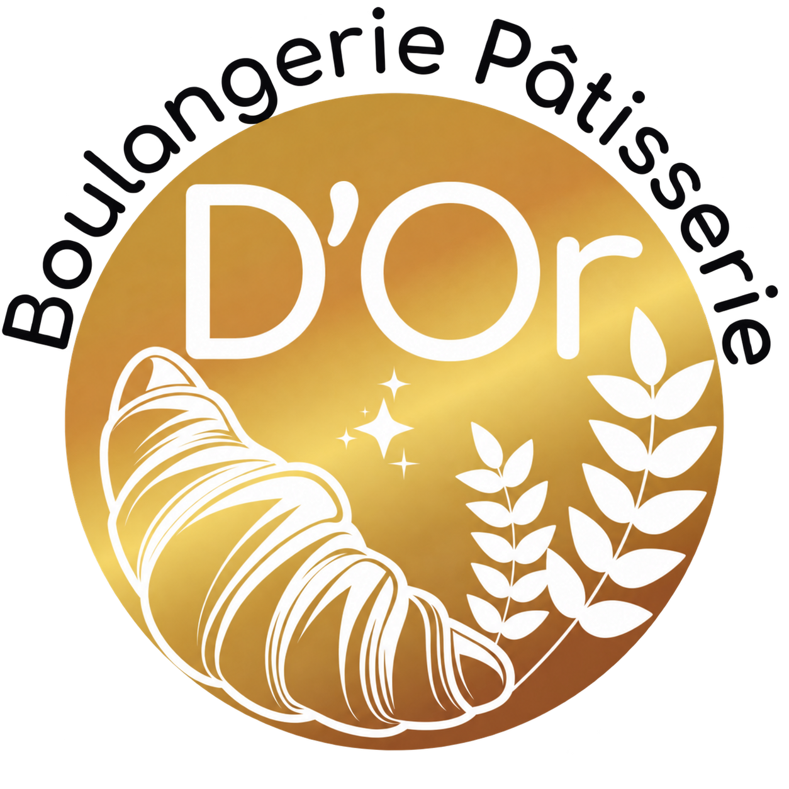
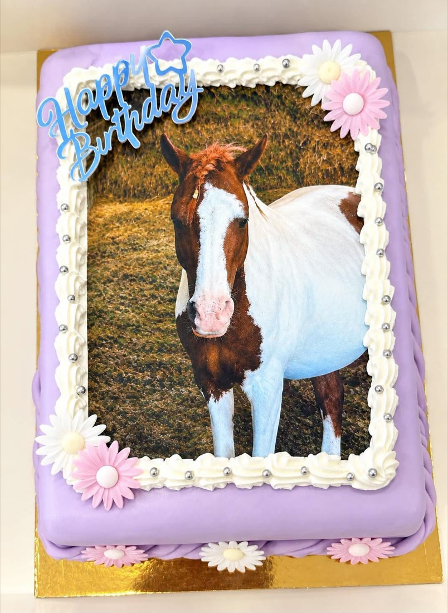

Pains & viennoiseries
Pains artisanaux et viennoiseries.

D'OrBoulangerie · Pâtisserie Nous appelerArtisan boulanger-pâtissier · Havré
Pains, viennoiseries et pâtisseries, avec une production artisanale sur place, à Havré.
À la boulangerie
Les spécialités de D'Or à découvrir en boutique. Pour connaître les produits disponibles, appelez-nous.
Pains artisanaux et viennoiseries.
Éclairs au chocolat, tartelettes aux fraises, tarte chocolat-spéculoos et créations multi-fruits.
Des gâteaux pour vos anniversaires et autres occasions.

Pour vos occasions
Nous réalisons des gâteaux personnalisés pour vos anniversaires. Contactez la boulangerie pour choisir la décoration et le nombre de parts.
Appelez pour discuter de votre idée, du prix et du délai de réalisation.
Parler de mon gâteauVoir les réalisations sur Facebook« Les croissants sont à tomber ! Tellement bons, légers, croustillants et avec le vrai goût d'antan. »
« Superbe boulangerie, patron très gentil. »
Note et avis consultés le 25 septembre 2026.
À bientôt à Havré
Également à Haine-Saint-Pierre
Chaussée de Mons 29, 7100 La Louvière
Chargement de la carte…